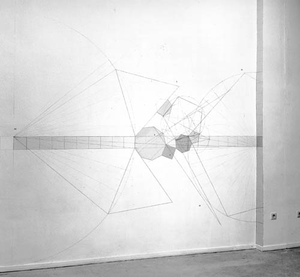

analysiert das Bewegungsverhalten von Menschen im öffentlichen Raum. Aus Video-Aufnahmen werden Modelle gerechnet, welche Grundlage von stadtplanerischen Methoden werden sollen.
Ziel ist eine adaptive, interagierbare Architektur, die sich entsprechend ihrer Benutzung entwickelt.
In Erwartung flexible Wekstoffe, welche veränderliche Gebäude ermöglichen, sollen hier Grundlagen erarbeitet werden für einen adaptive Planung von Siedlungen und Häusern.
Konzepte sollen angedacht werden, auf deren Grundlage die Gestaltung des Lebensraum in die Hände derer gelegt werden kann, die sich in ihm aufhalten.
Über öffentlichen Plätzen oder einer Halle wird eine Kamera installiert. Das Videobild wird an einen Tracking-Computer geleitet, der aus dem Bild bewegte, sich vom Untergrund unterscheidende Objekte filtert. Diese Tracking-Software versucht, Menschen zu unterscheiden, welche sich im öffentlichen Raum bewegen und versucht, die Interaktionen untereinander zu beschreiben.
Diese Informationen über die sich bewegenden Personen werden an eine Grafik-Workstation weitergeleitet. Sie speichert diese Informationen und rechnet daraus Bilder, welche sowohl die Abhängigkeiten der Bewegungen der Personen untereinander sowie die Veränderungen der Raumnutzung in der Zeit darzustellen versuchen.
Durch die Integration des originalen Videobildes in die virtuelle Grafik haben die Passanten die Möglichkeit, mit dem Videobild zu spielen, Klänge und Geometrien zu erzeugen in Abhängigkeit von ihrem Verhalten
 |
Open Space, Mailand/Italien
Ludwig Forum für
Internationale Kunst Aachen
Multimediaforum NRW
"Brückengang", Köln
Mülheimer Medienmeile, Mülheim/Ruhr
Modell/Modell, RWTH + Neuer Aachener Kunstverein, Aachen
2001
Milla & Partner-Preis für Medien im Raum
Bewegungsverhalten
von Menschen im Raum wird aufgezeichnet. Interaktionen zwischen Personen
bei spontanen Begegnungen werden sichtbar. Die Installationen hinterfragen
Ereignisse auf ihre geometrischen Verhältnisse (Territorien, Distanzverhalten),
wie sie durch Konzentration von Menschen auf Plätzen erzeugt werden
und macht diese visuell und akustisch wahrnehmbar.
Aus den Spuren der Menschen in den vergangenen Stunden werden imaginäre
Landschaften gerechnet, in welcher die Häufigkeiten der Frequentation
eines Ortes, die Hauptgehrichtungen und Wegesysteme dargestellt werden.
Diese virtuelle Landschaften werden (in zukünftigen Installationen)
Abbild möglicher Architektur und hinterfragen als Resultat von menschlichem
Territorialverhalten die Struktur der Stadt und die Gestalt der Stadtpläne.
Für die Analyse von Geh-Spuren von Menschen im Raum stellten wir unter Verwendung einer Trackingsoftware Datensammlungen von ca. 30 Minuten her. Diese wurden Gegenstand verschiedener Untersuchungen, die in der pdf- Dokumentation ausführlich beschrieben sind.
Jede Beschreibung von Raum als Verhältnis von Dingen zueinander führt unweigerlich zu einer Geometrie, also einer masshaltigen Abbildung von Raum oder Flächen. Insbesondere im Computer steht Geometrie für Konstruktion oder konstruierendes Beschreiben, das zu der reinen Datenaufnahme (amorphe, diskrete Entitäten)im Gegensatz steht. Im Folgenden führe ich Ideen aus, welche im Zusammenhang konstruierter Räume entstanden sind. Innerhalb des Projektes werden beide kontrastierende Verfahren aufeinanderzubewegt.
Ursprung des Projektes waren jahrelange Beschäftigungen mit geometrischen Mustern. Sie entstanden als Beschreibung von Territorien und Durchgangsbereichen, wie sie in Luftbildern von Städten zu erkennen sind. Die Muster werden verstanden als Versuch, mathematische Verhältnisse zwischen Siedlungsbereichen und Bewegungstrassen zu erkennen und diese als Methode zur Planung von Räumen einzusetzen.
Weitere Infos hier!
